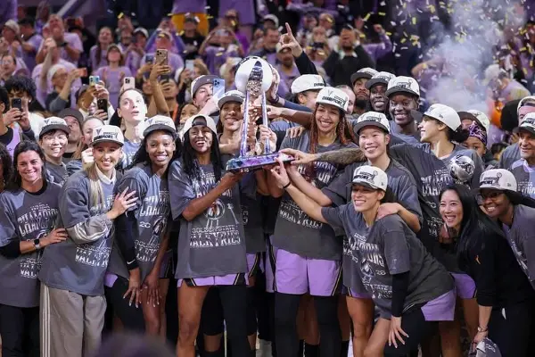
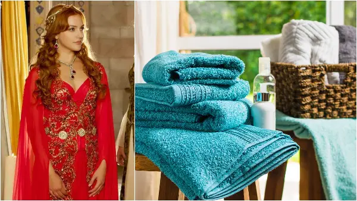

Најнови вести – Страница 419 | DAY.mk
Граѓаните чуваат 7,5 милијарди евра во банките, но колкумина навистина имаат заштеда?
Според податоците за септември, кредитите на граѓаните достигнале приближно 4,93 милијарди евра, додека депозитите се за повеќе од две милијарди евра повисоки. Во март граѓаните...
Настинка или грип? Еве како да ги препознаете симптомите и кога е неопходно да посетите лекар
Кај настинката симптомите се развиваат во текот на два до три дена.

Голден Стејт Валкириз ја освоија првата титула во ВНБА
Голден Стејт Валкириз се шампионки во ВНБА за 2026 година. еститки за новите шампионки во ВНБА, Валкириз!
Најголем крипто-грабеж во историјата: ФБИ ја обвини Северна Кореја
Во меѓувреме, Binance соопшти дека обезбедил средства за покривање на околу 90 проценти од украдените криптовалути, со што корисниците нема да ги сносат последиците од нападот. ...
Масовен протест во Португалија: Граѓаните бараат повлекување на законот за кириите
Илјадници граѓани се собраа во центарот на Лисабон на протест против предлог-законот за изнајмување станови, барајќи португалската влада да го повлече. Владата смета дека овие м...

Рецепт за меки пешкири како во палатата на Хурем султан: Потребни ви се само две состојки
Пред перењето задолжително проверете ја етикетата на пешкирите и придржувајте се до препорачаната температура.
Д-р Ранко Рајовиќ открива зошто преголемата родителска помош му штети на детето
Парадоксот е во тоа што колку повеќе му помагаме на детето и му ги отстрануваме сите пречки од патот, толку повеќе му штетиме на неговиот развој.
Омега-3 масни киселини за деца – сè што треба да знаете
ДХА е клучна за развојот на мозокот и видот.
Малиот црн фустан секогаш е во мода: класика што лесно добива нов изглед
Зошто малиот црн фустан не излегува од мода?
АЛТА банка во Македонија ги уверува клиентите: Ликвидни сме, депозитите се сигурни, работиме нормално
Алта банка АД Битола ја информира јавноста дека е ликвидна и продолжува со редовно работење, по случувањата поврзани со Алта банка во Србија. АЛТА банка АД Битола информира дека...
Најнови Вести